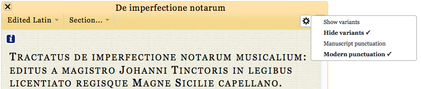

  <div class="content">
  	<div class="contentbox">
      <div class="explanation navigation">
          <div class="explanation-row">
            <div class="cell"></div>
            <div class="cell"><a href="../#">Up (website guide)</a></div>
            <div class="cell"></div>
          </div>
        <div class="explanation-row">
          <div class="cell"><a href="3.html">Back (navigation menu)</a></div>
          <div class="cell"></div>
          <div class="cell"><a href="5.html">Next (add pane menu)</a></div>
        </div>
      </div>
      <h3>The edition pages: the view options menu</h3>
      <p>If the text you are viewing is the edited Latin, then the
        view options menu will be available.</p>
      <p>Variants are not visible by default, but when this option is
        selected, loci of variation will
        be <a href="../Variants/1.html">shown in green</a>, and moving
        the mouse over them will <a href="../Variants/2.html">provide
        more detailed information.</a></p>
      <p>Punctuation is shown in a modernised way by default, but a
      style more in keeping with the contemporary sources is available
      by selecting ‘Manuscript punctuation’</p>
      <div class="helpshot h821">
        
      </div>
    <!--end .contentbox -->
  	</div>
    <!-- end .content -->
  </div>